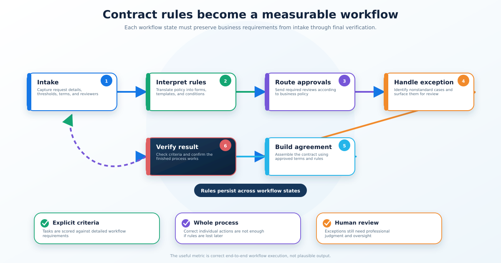

Applied Generative AI for Knowledge Workers
Contracting workflows become measurable AI tasks

A collaboration with Ironclad translated representative contracting work into structured training and evaluation tasks. OpenAI reported that GPT-6 Astra achieved a higher average score and lower estimated time per attempt than GPT-5.6 Sol on the research task set.
Why it matters: Professional AI needs to preserve business requirements across a complete workflow. Explicit task criteria make it possible to measure whether a finished process actually satisfies those requirements.
Reliable Generative AI
Concept: Acceptance criteria, evaluation, and human oversight
The Ironclad work converts complex professional work into measurable tasks with explicit requirements, making reliability visible at the workflow level.
Study next: How to write task-level acceptance criteria that measure whether an AI system preserved business rules, not just whether it produced an output.